Métodos estadísticos para
Ciencias Sociales III
Kevin Carrasco
Sociología - UNAB
2do Sem 2026
Sitio web del curso
Presentación
Este curso
Unidad 1: El modelo de regresión lineal
Unidad 2: Supuestos del modelo de regresión lineal
Unidad 3: Introducción a los modelos lineales generalizados (GLM)
Evaluación
Prueba 1 (25%): 07 de septiembre
Trabajo 1 (25%): 09 de octubre
Prueba 2 (25%): 09 de noviembre
Trabajo 2 (25%): 27 de noviembre
Examen (30% de la nota final): fecha por definir. Eximición con nota de presentación igual o superior a 5,0
Sitio web del curso
Enlace directo
- Ventajas: todo en un mismo lugar, permite combinar texto y código, reproducible, gratis, acceso abierto, etc.
Sesión 1
Introducción y bases de la investigación cuantitativa
Introducción a la estadística multivariada
Introducción y bases de la investigación cuantitativa
En la investigación cuantitativa se asume que hay una realidad “allá afuera” que quien investiga puede conocer a través de su cuantificación
Permite lidiar con la incertidumbre
Foco en la teoría (generalmente se enfatiza el método hipotético-deductivo, buscando probar hipótesis de teorías previamente estudiadas)
Introducción y bases de la investigación cuantitativa
Explicar lo que es, no lo que debería ser
Conocer y explicar grupos de personas de manera general, no individuos por sí solos
Proceso de investigación cuantitativo (D’Ancona 2001)
- Formulación de un problema de investigación
- Operacionalización del problema
- Hipótesis
- Operacionalización de conceptos teóricos
- Delimitación de la unidad de análisis
- Diseño de la investigación: cómo se realizará la investigación (diseños transversales, longitudinales, experimentales)
- Factibilidad de la investigación: cronología de tareas, recursos disponibles (materiales y humanos), etc.
Proceso de investigación cuantitativo (D’Ancona 2001)
- Formulación de un problema de investigación
- Operacionalización del problema
- Hipótesis
- Operacionalización de conceptos teóricos
- Delimitación de la unidad de análisis
- Diseño de la investigación: cómo se realizará la investigación (diseños transversales, longitudinales, experimentales)
- Factibilidad de la investigación: cronología de tareas, recursos disponibles (materiales y humanos), etc.
Medición y operacionalización
Medición y operacionalización
Operacionalización = “codificación” de un fenómeno con el fin de hacerlo medible
Hay muchas formas de “codificar” un mismo concepto
¿Por qué es importante definir operacionalmente los conceptos?
Medición y operacionalización
¿Qué concepto se pretende medir con esta pregunta?
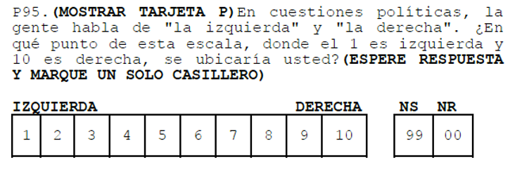
Medición y operacionalización
¿Y con estas preguntas?
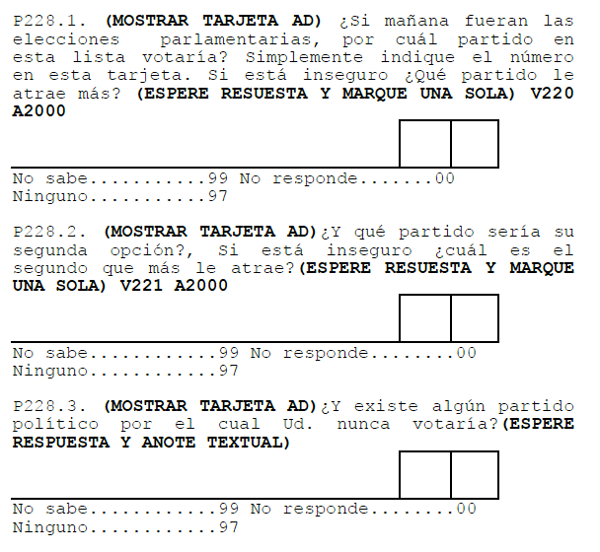
Medición y operacionalización
¿Y si quisiéramos medir un concepto más complejo?
¿Cómo se puede medir cohesión social?
Medición y operacionalización
- Cohesión social según CEPAL (2021)
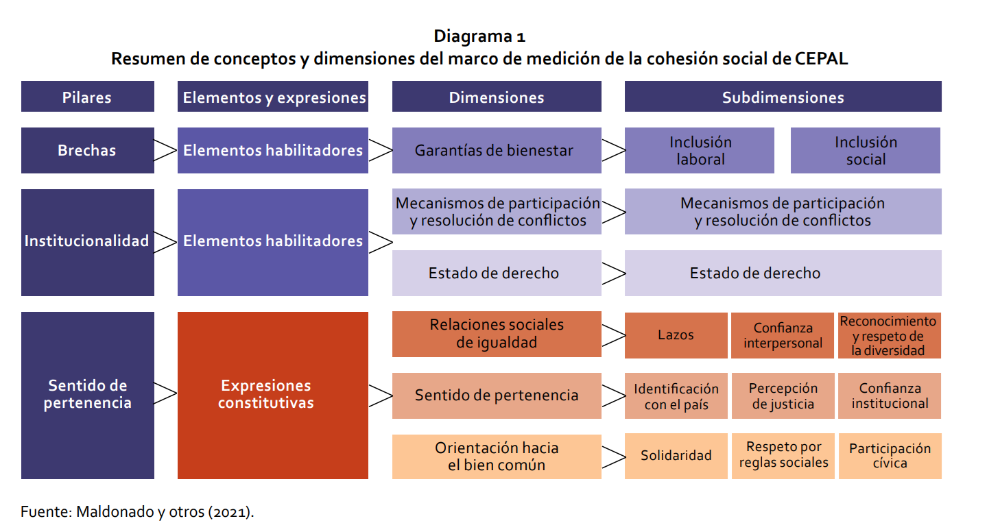
Medición y operacionalización
- Cohesión social según el Observatorio de Cohesión Social (OCS-COES, 2020)
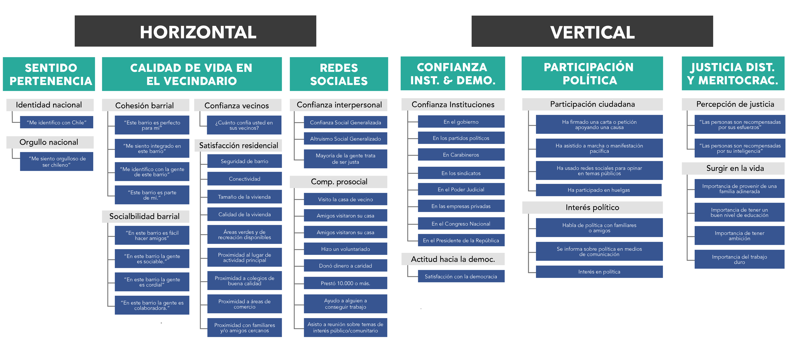
Medición y operacionalización
¿Por qué es importante definir operacionalmente los conceptos?
Claridad conceptual (clave para el testeo de hipótesis)
Control del “error de medición”
- Inexactitudes derivadas de problemas con el instrumento de medición
- ¿Ejemplos?
Medición y operacionalización
- Error de muestreo
- Inexactitud en la elección de los casos
- Problema de representatividad
Un ejemplo: encuesta CADEM
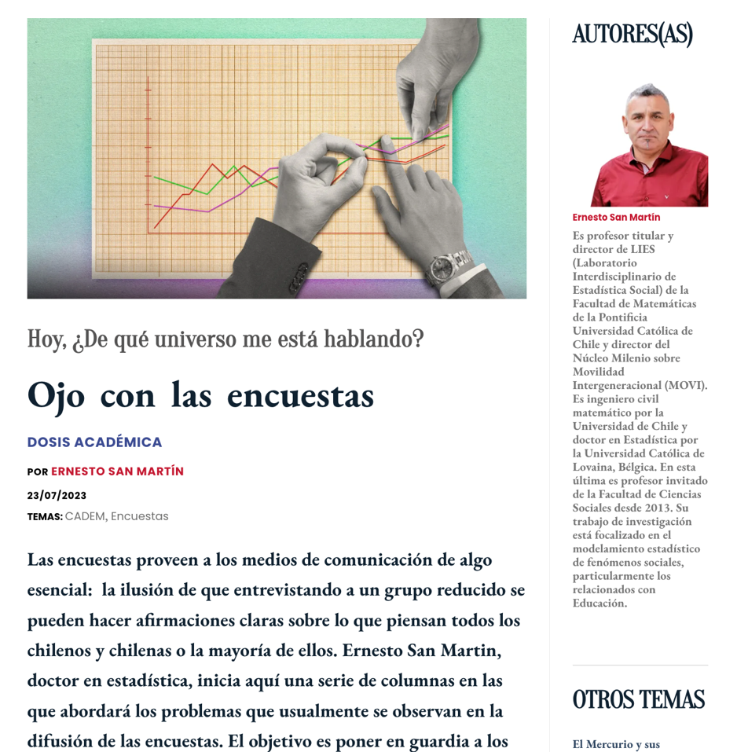
Un ejemplo: encuesta CADEM
Al difundir la encuesta CADEM, CNN tituló de la siguiente forma:
86% cree que el Caso Convenios es “corrupción”
Sin embargo, hay un problema
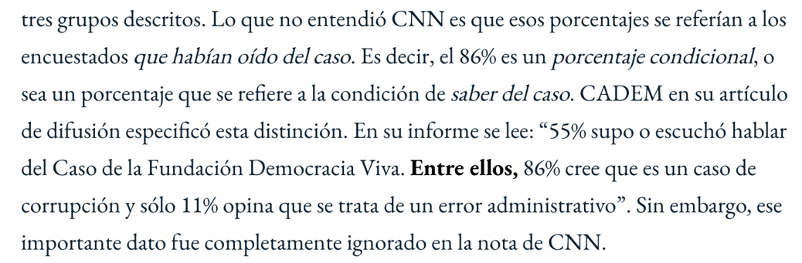
Un ejemplo: encuesta CADEM
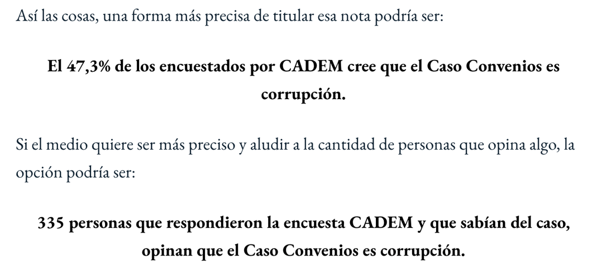
Un ejemplo: encuesta CADEM
Otro problema: la no respuesta
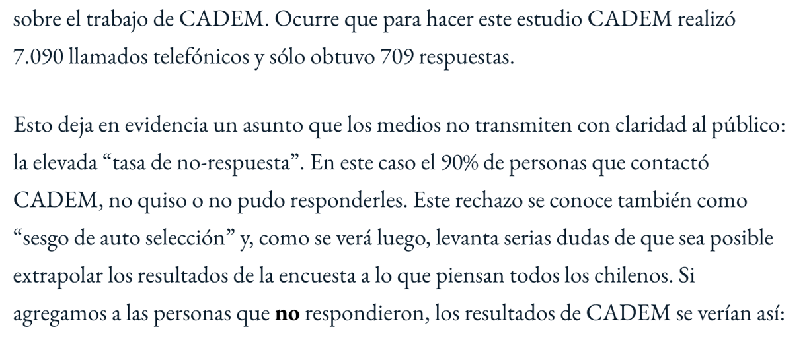
Un ejemplo: encuesta CADEM
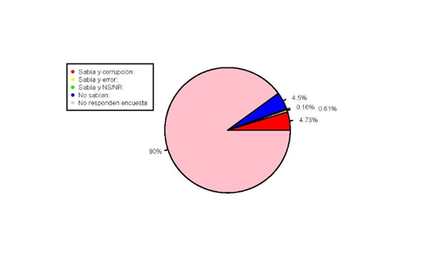
Datos y variables
Introducción y bases de la investigación cuantitativa
Datos y variables
Los datos miden al menos una característica de al menos una unidad en al menos un punto en el tiempo
Ejemplo: la esperanza de vida en Chile el 2017 fue de 79,9 años
- Característica (variable): esperanza de vida
- Unidad: años
- Punto en el tiempo: 2017
Datos y variables
Base de datos
Forma “rectangular” de almacenamiento de datos:

Datos y variables
Cada fila representa una unidad o caso (ej: una persona entrevistada)
Cada columna una variable (ej: edad)
Cada variable posee valores numéricos
Los valores numéricos pueden estar asociados a una etiqueta (ej: 1 = Mujer)
Datos y variables
Ejemplos de estudios y bases de datos
Datos y variables
Una variable representa cualquier cosa o propiedad que varía y a la cual se le asigna un valor. Es decir:
\(Variable \neq Constante\)
Pueden ser visibles o no visibles/latentes (ej: peso / inteligencia)
Datos y variables
Discretas (rango finito de valores):
- Dicotómicas
- Politómicas
Continuas:
- Rango (teóricamente) infinito de valores
Escalas de medición de variables
- NOIR: Nominal, Ordinal, Intervalar, Razón
| Tipo | Características | Propiedad de números | Ejemplo |
|---|---|---|---|
| Nominal | Uso de números en lugar de palabras | Identidad | Nacionalidad |
| Ordinal | Números se usan para ordenar series | + ranking | Nivel educacional |
| Intervalar | Intervalos iguales entre números | + igualdad | Temperatura |
| Razón | Cero real | + aditividad | Distancia |
Introducción a la estadística multivariada
Asociación: covarianza y correlación
¿Se relaciona la variación de una variable con la variación de otra variable?

Correlación
- Medida de co-variación lineal estandarizada
¿En qué rango varía una correlación?
Varía entre -1 y +1
Gráficamente se expresa en nubes de puntos
Correlación
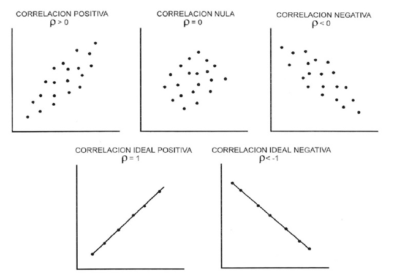
Correlación y causalidad
- Pero atención: correlación no implica causalidad
De la correlación a la recta de regresión
¿Por qué no basta con la correlación?
La correlación resume la fuerza y la dirección de una relación lineal, pero no permite:
- predecir el valor de una variable a partir de otra
- cuantificar cuánto cambia una variable cuando la otra aumenta en una unidad
- distinguir entre variable dependiente e independiente
La regresión sí lo permite: describe la relación mediante una función
Variable dependiente e independiente
\(Y\): variable dependiente o explicada. Es la que queremos comprender
\(X\): variable independiente, explicativa o predictora
La distinción no proviene de los datos, sino de la teoría y del diseño de investigación
La correlación entre \(X\) e \(Y\) es simétrica; la regresión de \(Y\) sobre \(X\) no lo es
Un ejemplo
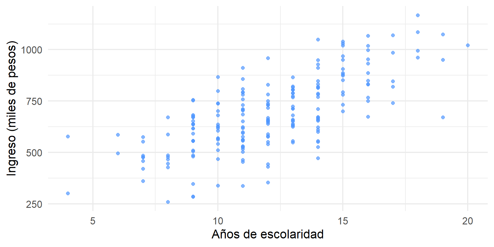
Figure 1
Datos simulados con fines ilustrativos
Un ejemplo
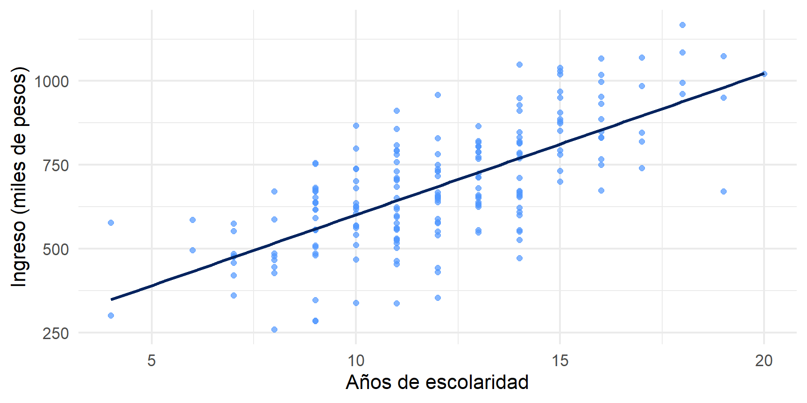
Figure 2
La recta resume la relación entre ambas variables
La ecuación de la recta
\[Y_i = \beta_0 + \beta_1 X_i + \epsilon_i\]
\(\beta_0\) (intercepto): valor esperado de \(Y\) cuando \(X = 0\)
\(\beta_1\) (pendiente): cambio esperado en \(Y\) ante un aumento de una unidad en \(X\)
\(\epsilon_i\) (error): lo que el modelo no logra explicar para cada caso
Intercepto y pendiente
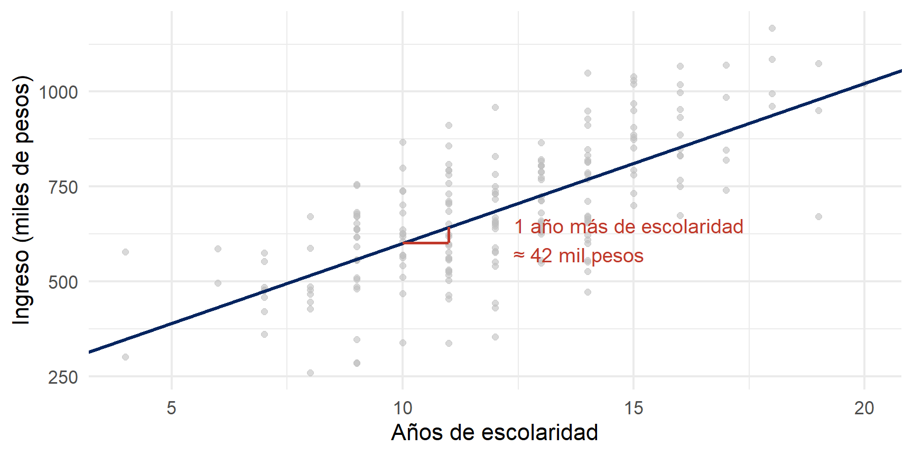
Figure 3
Valores observados y valores predichos
Para cada caso tenemos un valor observado (\(Y_i\)) y un valor predicho por la recta (\(\hat{Y}_i\))
La diferencia entre ambos es el residuo:
\[e_i = Y_i - \hat{Y}_i\]
- Ningún caso se ubica exactamente sobre la recta: el modelo describe una tendencia, no cada observación
Los residuos
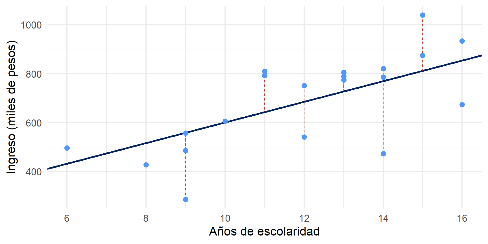
Figure 4
Cada línea segmentada representa un residuo
¿Cuál de todas las rectas posibles?
Por una misma nube de puntos pueden trazarse infinitas rectas
El criterio de los mínimos cuadrados ordinarios (MCO) selecciona aquella que hace mínima la suma de los residuos elevados al cuadrado:
\[\sum_{i=1}^{n} e_i^2 = \sum_{i=1}^{n} (Y_i - \hat{Y}_i)^2\]
- Se elevan al cuadrado para que los residuos positivos y negativos no se anulen entre sí, y para penalizar más los errores grandes
Lo que viene en el curso
¿Cómo se estiman \(\beta_0\) y \(\beta_1\)? (unidad 1)
¿Qué tan bien se ajusta la recta a los datos? (bondad de ajuste)
¿Podemos generalizar el resultado más allá de la muestra? (inferencia)
¿Qué ocurre con más de una variable independiente? (regresión múltiple)
¿Qué condiciones debe cumplir el modelo para ser confiable? (unidad 2)
¿Y si la variable dependiente es categórica? (regresión logística)
Para esta semana
Lectura: Moore, Estadística aplicada básica, secciones 1.1 y 1.2
- Presentación de datos mediante gráficos
- Descripción de distribuciones con números
Revisar el programa del curso y la planificación de sesiones
Taller práctico
Métodos estadísticos para Ciencias Sociales III
Kevin Carrasco
Sociología - UNAB
2do Sem 2026
Sitio web del curso